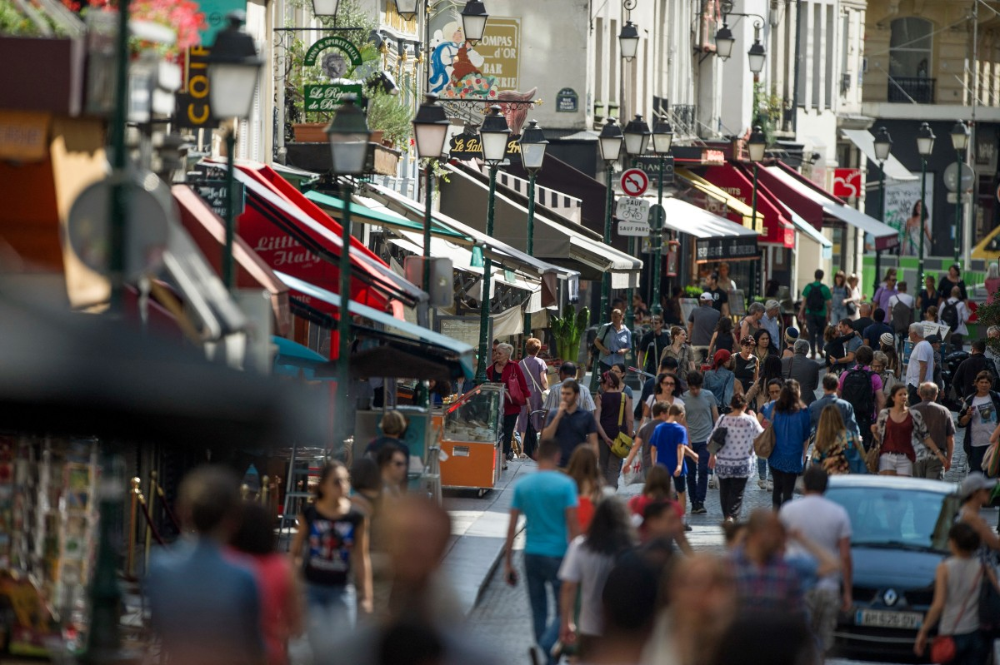
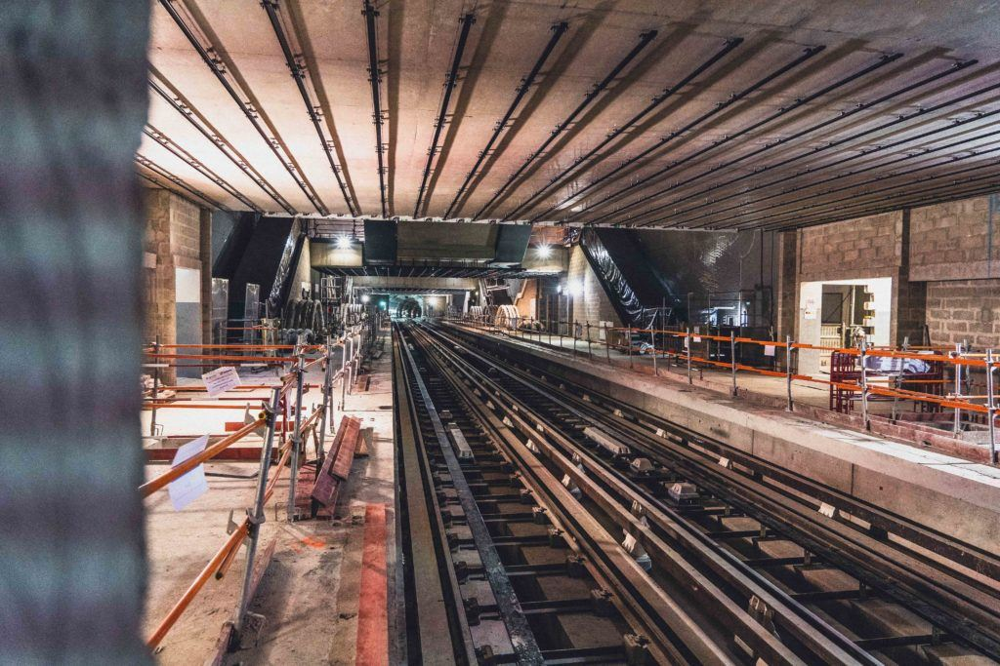

Analysis
Promoting France's heritage and attracting tourists

The Paris 2024 Olympic Games provided an opportunity to showcase France's iconic sites, such as the Château de Versailles, the Eiffel Tower and the Stade de France. These venues, strategically chosen to host sporting or ceremonial events, have served as a global showcase for France's historical and cultural heritage.
For example, the Château de Versailles hosted the equestrian events, giving this prestigious site international exposure. The Eiffel Tower featured prominently in the opening and closing ceremonies, as well as on television broadcasts, raising the profile of Paris around the world. This type of promotion reinforced France's image as a top tourist destination, attracting not only Olympic spectators but also future visitors
In economic terms, these choices should have a lasting impact thanks to the influx of tourists that will revitalise the hotel, restaurant and local services sectors. Investment in preserving and developing these sites for the Olympic Games will also have a positive impact on their long-term appeal.
Local economic dynamism
The organisation of the Olympic Games generated intense economic activity in the areas close to the sports and event venues. Local businesses, whether cafés, restaurants, hotels or shops, have seen a significant increase in their turnover thanks to the influx of spectators, athletes and tourists. Restaurants and hotels near the Stade de France in Saint-Denis, for example, have experienced a real economic boom.
In addition, thousands of temporary jobs have been created to meet the needs of organising the Olympic Games, particularly in the fields of logistics, security, hospitality and transport. These jobs offered opportunities to people who were often far from the labour market, contributing to a significant social dynamism in areas such as Seine-Saint-Denis.
Infrastructure improvements
The Olympic Games also served as a catalyst for the modernisation of transport infrastructure in the Île-de-France region. For example, the extension of metro line 14 was completed before the Games, facilitating access to the Stade de France and other venues. This improvement will also benefit residents beyond the event, reducing transport saturation in the region.
Investment has also been made to make metro stations accessible to people with reduced mobility, which will benefit all public transport users in the long term.
Promoting social cohesion and national pride

The Olympic Games were an opportunity to bring the French people together around a unifying event. The spectacular ceremonies, French victories and athletic performances gave rise to a feeling of national pride and unity. The opening and closing ceremonies, broadcast around the world, rallied people around the universal values of solidarity and surpassing oneself. The victories of French athletes, such as the basketball and judo teams, strengthened this cohesion and were celebrated throughout France.
The festivities organised around the events also provided an opportunity for local residents to enjoy moments of celebration and conviviality, particularly in the fan zones, creating a joyous and united atmosphere throughout the country.
Sporting and educational legacy
The infrastructure built or renovated for the Olympic Games represents an important legacy for sport in France. For example, facilities such as swimming pools and stadiums, such as the Stade Pierre-Mauroy in Lille, will remain accessible to local sports clubs, schools and residents after the Games, offering increased opportunities for physical activity.
In addition, the media coverage of the event has helped to promote the benefits of sport, particularly among young people. School programmes have been set up to encourage children and young adults to take up regular sporting activities, contributing to better public health in the long term.